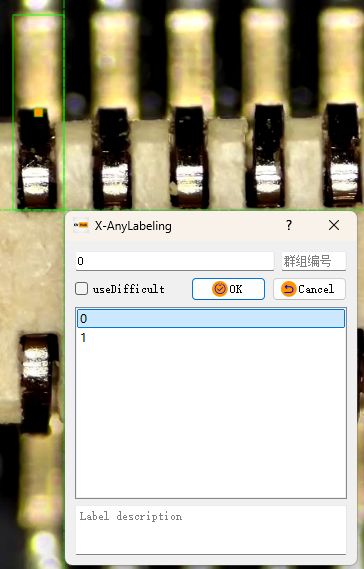
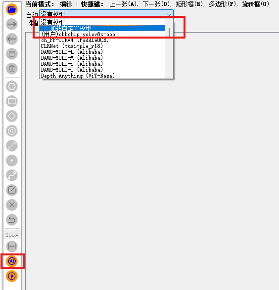

yolov8_obb芯片引脚缺陷检测
yolov8_obb芯片引脚缺陷检测1. 项目说明2. 数据集制作3. 数据集转换4. 模型训练4.1 新建dota8-obb.yaml文件4.2 新建yolov8-obb.yaml文件4.3 修改代码，保证动态batch4.4 新建train.py4.5 开始训练5. 模型导出5.1 进行辅助标注的模型导出5.2 进行推理的模型导出6. trt模型转换6.1 环境依赖6.2 配置CMakeLists.txt6.3 配置并转换模型7. 推理附录1. X-AnyLabeling快捷键2. 视频处理脚本3. 使用自定义模型进行辅助标注参考
1. 项目说明
本项目实现了使用 YOLOv8-OBB 模型进行芯片引脚缺陷检测。
本项目不涉及具体原理等内容的说明，如果需要了解请查看本文文末的参考部分，进行进一步的学习和了解。
数据集制作部分建议在自己的win主机进行，本文经验也基于win的标注，其他平台请自行探索。
数据集转换到模型导出的过程建议使用虚拟环境，以防止对主机的环境造成影响。
trt模型导出和推理必须在同一设备进行，trtmodel在不同平台无法通用。
用于辅助标注的模型google drive/baidu drive和用于推理的模型google drive/baidu drive，模型仅用于测试流程，效果不佳。
2. 数据集制作
数据集标注使用X-AnyLabeling进行标注，下载链接(github release)。如果本地具有GPU，可以选择GPU版本，可以加速辅助标注的过程。这个软件的优点是，可以将已经训练完成的模型导入到软件中进行辅助的标注。
打开软件，打开需要标注图片的路径，或者需要标注的视频和图片。如果是图片的话建议使用脚本对图片进行处理，软件自带的处理方法会导致数据集过多，且未进行筛选。数据处理的脚本及使用方法见附录的内容。 由于是旋转模型，因此选择开始绘制旋转框，如下图所示。

在对应的位置进行标签的框选、标签名称的填写。完成绘制后选择正确的标签，点选OK即可。随后再通过z/x/c/v四个按键对标签框进行旋转方向的调整，调整至刚好框选完全且不多余为止。

完成标记后选择导出---->导出DOTA标签，得到提示就完成了数据集基础制作，后面还需要对格式进行转换。

3. 数据集转换
首先克隆yolov8-obb的git库。
git clone https://github.com/ultralytics/ultralytics.gitcd ultralyticsgit checkout tags/v8.1.0 -b v8.1.0升级cmake版本：
xxxxxxxxxxwget https://github.com/Kitware/CMake/releases/download/v3.30.0/cmake-3.30.0-linux-aarch64.tar.gztar -zxvf cmake-3.30.0-linux-aarch64.tar.gzsudo mv cmake-3.30.0-linux-aarch64 /usr/local/cmake-3.30.0sudo rm /usr/bin/cmake /usr/bin/ccmake /usr/bin/cmake-guisudo ln -sf /usr/local/cmake-3.30.0/bin/* /usr/bin/cmake --version输出cmake version 3.30.0即为升级成功，升级完成后安装依赖。
xxxxxxxxxxpip install ultralytics onnx onnxsim onnxruntime hub_sdk -i https://pypi.tuna.tsinghua.edu.cn/simple在ultralytics中新建dataset_obb文件夹，建立出如图所示的目录结构，并将图片和标签放入对应的文件夹。其中train和val自行划分即可，此处不进行详细讲解。
xxxxxxxxxxdataset_obb├── images│ ├── train│ └── val└── labels ├── train_original └── val_original得到如图所示的目录后，在ultralytics文件夹中新建一个脚本convert_dota_to_yolo_obb.py，将下面的脚本粘贴进去。
xfrom ultralytics.data.converter import convert_dota_to_yolo_obb
convert_dota_to_yolo_obb("./dataset_obb")跳转至convert_dota_to_yolo_obb函数，对class_mapping进行修改，改为正确的类别数和类别名：
xxxxxxxxxxclass_mapping = { "plane": 0, "baseball-diamond": 1, "bridge": 2, ...}在这个class_mapping函数下的convert_label函数结尾，有如下的片段，可以看到默认读取的图片为png，需要在这里将png修改为自己标记的图片的格式。
xxxxxxxxxx for image_path in TQDM(image_paths, desc=f"Processing {phase} images"): if image_path.suffix != ".png": continue image_name_without_ext = image_path.stem img = cv2.imread(str(image_path)) h, w = img.shape[:2] convert_label(image_name_without_ext, w, h, orig_label_dir, save_dir)修改完成后运行此脚本，在dataset_obb/labels下面会出现val和train的文件夹，文件夹中会有转换完成后的标签。
4. 模型训练
4.1 新建dota8-obb.yaml文件
将下面的内容粘贴进去，修改文件的路径和标签数目、名称。
xxxxxxxxxxpath~/ultralytics/dataset_obb # dataset root dirtrainimages/trainvalimages/val
names 0plane 1baseball-diamond4.2 新建yolov8-obb.yaml文件
将下面的内容粘贴进去，修改nc的数目。
xxxxxxxxxx# Ultralytics YOLO , AGPL-3.0 license# YOLOv8 Oriented Bounding Boxes (OBB) model with P3-P5 outputs. For Usage examples see https://docs.ultralytics.com/tasks/detect # Parametersnc15 # number of classesscales# model compound scaling constants, i.e. 'model=yolov8n.yaml' will call yolov8.yaml with scale 'n' # [depth, width, max_channels] n0.33 0.25 1024 # YOLOv8n summary: 225 layers, 3157200 parameters, 3157184 gradients, 8.9 GFLOPs s0.33 0.50 1024 # YOLOv8s summary: 225 layers, 11166560 parameters, 11166544 gradients, 28.8 GFLOPs m0.67 0.75 768 # YOLOv8m summary: 295 layers, 25902640 parameters, 25902624 gradients, 79.3 GFLOPs l1.00 1.00 512 # YOLOv8l summary: 365 layers, 43691520 parameters, 43691504 gradients, 165.7 GFLOPs x1.00 1.25 512 # YOLOv8x summary: 365 layers, 68229648 parameters, 68229632 gradients, 258.5 GFLOPs # YOLOv8.0n backbonebackbone # [from, repeats, module, args]-1 1 Conv 64 3 2 # 0-P1/2-1 1 Conv 128 3 2 # 1-P2/4-1 3 C2f 128 True-1 1 Conv 256 3 2 # 3-P3/8-1 6 C2f 256 True-1 1 Conv 512 3 2 # 5-P4/16-1 6 C2f 512 True-1 1 Conv 1024 3 2 # 7-P5/32-1 3 C2f 1024 True-1 1 SPPF 1024 5 # 9 # YOLOv8.0n headhead-1 1 nn.Upsample None 2 'nearest'-1 6 1 Concat 1 # cat backbone P4-1 3 C2f 512 # 12 -1 1 nn.Upsample None 2 'nearest'-1 4 1 Concat 1 # cat backbone P3-1 3 C2f 256 # 15 (P3/8-small) -1 1 Conv 256 3 2-1 12 1 Concat 1 # cat head P4-1 3 C2f 512 # 18 (P4/16-medium) -1 1 Conv 512 3 2-1 9 1 Concat 1 # cat head P5-1 3 C2f 1024 # 21 (P5/32-large) 15 18 21 1 OBB nc 1 # OBB(P3, P4, P5)4.3 修改代码，保证动态batch
修改下面代码的对应位置的内容。
xxxxxxxxxx# ========== head.py ==========
# ultralytics/nn/modules/head.py第241行，forward函数# return torch.cat([x, angle], 1) if self.export else (torch.cat([x[0], angle], 1), (x[1], angle))# 修改为：
return torch.cat([x, angle], 1).permute(0, 2, 1) if self.export else (torch.cat([x[0], angle], 1), (x[1], angle))4.4 新建train.py
将下面的内容粘贴进去，修改yolov8-obb.yaml文件名为yolov8s-obb.yaml（如果训练模型l则修改为yolov8l-obb.yaml，以此类推）、修改epochs(轮次)、imgsz(图像大小)、batch(批大小)等参数，更多参数请参考官方网站中的Train Settings部分。
xxxxxxxxxxfrom ultralytics import YOLO # Load a modelmodel = YOLO("yolov8s-obb.yaml").load("yolov8s-obb.pt") # build from YAML and transfer weights
# Train the modelresults = model.train(data="dota8-obb.yaml", epochs=100, imgsz=640, batch=4)4.5 开始训练
xxxxxxxxxxpython train.py5. 模型导出
模型导出时需要注意，用于辅助标注的模型和用于加速推理的模型无法通用，下面会进行分别的说明。
5.1 进行辅助标注的模型导出
在这里建议重新克隆一份代码
xxxxxxxxxxgit clone https://github.com/ultralytics/ultralytics.git ultralytics_anncd ultralytics_ann
新建一个export.py，将下面的内容粘贴进去，修改模型文件为需要转换的模型文件。
xxxxxxxxxxfrom ultralytics import YOLOmodel = YOLO("/home/nvidia/ultralytics/runs/obb/train24/weights/best.pt")model.export(format="onnx")
运行脚本，得到导出后的onnx。
xxxxxxxxxxpython export.py得到对应的onnx后，即可用于辅助标准，模型导入到标注软件的方法见附录。
5.2 进行推理的模型导出
后面的内容在原用于训练的项目中进行。
先根据下面的内容修改代码。
xxxxxxxxxx# ========== exporter.py ==========
# ultralytics/engine/exporter.py第353行# output_names = ['output0', 'output1'] if isinstance(self.model, SegmentationModel) else ['output0']# dynamic = self.args.dynamic# if dynamic:# dynamic = {'images': {0: 'batch', 2: 'height', 3: 'width'}} # shape(1,3,640,640)# if isinstance(self.model, SegmentationModel):# dynamic['output0'] = {0: 'batch', 2: 'anchors'} # shape(1, 116, 8400)# dynamic['output1'] = {0: 'batch', 2: 'mask_height', 3: 'mask_width'} # shape(1,32,160,160)# elif isinstance(self.model, DetectionModel):# dynamic['output0'] = {0: 'batch', 2: 'anchors'} # shape(1, 84, 8400)# 修改为：
output_names = ['output0', 'output1'] if isinstance(self.model, SegmentationModel) else ['output']dynamic = self.args.dynamicif dynamic: dynamic = {'images': {0: 'batch'}} # shape(1,3,640,640) if isinstance(self.model, SegmentationModel): dynamic['output0'] = {0: 'batch', 2: 'anchors'} # shape(1, 116, 8400) dynamic['output1'] = {0: 'batch', 2: 'mask_height', 3: 'mask_width'} # shape(1,32,160,160) elif isinstance(self.model, DetectionModel): dynamic['output'] = {0: 'batch'} # shape(1, 84, 8400)新建export.py，将下面内容粘贴进去，修改模型为训练的结果
xxxxxxxxxxfrom ultralytics import YOLO
model = YOLO("yolov8s-obb.pt")success = model.export(format="onnx", dynamic=True, simplify=True)运行脚本，得到导出后的onnx。
xxxxxxxxxxpython export.py6. trt模型转换
推理过程中需要将onnx模型转换为trtmodel，以便进行加速推理。
xxxxxxxxxxgit clone https://github.com/xjhaz/yolov8_obb_ChipPinDefectDetection.gitcd yolov8_obb_ChipPinDefectDetection6.1 环境依赖
测试环境
OpenCV 4.8.0
CUDA 11.4
cuDNN 8.6.0
TensorRT 8.5.2
protobuf 3.11.4
6.2 配置CMakeLists.txt
将compute_87、sm_87中的数字修改为自己的板卡的对应计算能力。如果使用的是其他显卡，请从官方网站进行查询并进行修改。
xxxxxxxxxxset(CUDA_GEN_CODE "-gencode=arch=compute_87,code=sm_87")| 模块型号 | 计算能力 |
|---|---|
| Jetson AGX Orin/Jetson Orin NX/Jetson Orin Nano | 87 |
| Jetson AGX Xavier/Jetson Xavier NX | 72 |
| Jetson TX2 | 62 |
| Jetson Nano | 53 |
设置下面的路径为本机正确的路径。在Jetson平台中无需设置CUDNN_DIR，其他平台需要进行设置。
xxxxxxxxxxset(OpenCV_DIR "/usr/local/include/opencv4")set(CUDA_TOOLKIT_ROOT_DIR "/usr/local/cuda-11.4")#set(CUDNN_DIR "/usr/local/cudnn8.4.0.27-cuda11.6")set(PROTOBUF_DIR "/usr/include/google/protobuf")设置完成后进行编译
xxxxxxxxxxmkdir build && cd buildcmake ..make -j6.3 配置并转换模型
将之前生成的onnx粘贴到workspace路径下，修改config/config_convert.yaml的配置，将mode修改为转换模型的精度，model修改为模型的名字（不包含.onnx的后缀）。
xxxxxxxxxxmode"FP16" # FP32 or FP16 or INT8model"best" # Your model name修改完成后进入到workspace目录进行模型的转换。转换完成后目标模型会自动存储到onnx的同目录下。
xxxxxxxxxxcd workspace./pro convert7. 推理
修改config/config_infer.yaml的配置。
| 配置项 | 说明 |
|---|---|
| source_mode | 源模式，'1' 表示使用在 'video_path' 中指定的视频文件。'0' 表示使用'video0' 这样的视频输入设备。 |
| video | 视频输入设备设置，'0' 表示引用设备 '/dev/video0'。 |
| video_path | 视频文件的路径，用于推理。 |
| engine_file | TensorRT 引擎文件的路径。 |
| gpu_id | GPU 编号，'0' 表示使用第一个GPU进行处理。 |
| confidence_threshold | 置信度阈值，筛选出置信分数低于此值的检测结果。 |
| nms_threshold | 非最大抑制（NMS）阈值，用于解决重叠边界框的问题。 |
| nms_method | NMS 方法， 'FastGPU' 表示使用 GPU 加速计算， 'CPU' 表示使用 CPU 计算。 |
| max_objects | 最大检测对象数，限制检测到的对象数量。 |
| preprocess_multi_stream | 多流预处理标志，'false' 表示不启用多流预处理。 |
配置完成后运行
xxxxxxxxxx./pro or./pro infer成功运行之后会出现如图所示的画面，有缺陷的引脚会被标记出来。

附录
1. X-AnyLabeling快捷键
| 功能 | 快捷键 |
|---|---|
| 前一张 | A/a |
| 后一张 | D/d |
| 标记旋转框 | O/o |
| 大角度逆时针旋转 | Z/z |
| 小角度逆时针旋转 | X/x |
| 小角度顺时针旋转 | C/c |
| 大角度顺时针旋转 | V/v |
| 删除当前标签 | Ctrl+Del |
| 删除当前图片 | Ctrl+Shift+Del |
2. 视频处理脚本
本脚本实现了将某个路径下的所有视频都转换为单张的图片。
可以设置的参数：
| 参数名 | 意义 |
|---|---|
| video_directory | 输入的视频文件文件夹，后缀为mp4或avi |
| output_directory | 图片的输出路径 |
| frame_interval | 每隔多少帧保存为一张图片 |
| similarity_threshold | 相似度百分比，两次保存的图片中相似度高于此百分比则不保存新的图片 |
| max_workers | 同时进行处理的线程数，默认为4。每个线程会处理一个视频 |
安装下列依赖：
xxxxxxxxxxpip install opencv-python scikit-image tqdm -i https://pypi.tuna.tsinghua.edu.cn/simple将下面的代码复制到自己需要的路径的python文件，运行后即可得到转换后的图片文件。
xxxxxxxxxximport osimport cv2from skimage.metrics import structural_similarity as ssimfrom concurrent.futures import ThreadPoolExecutor, as_completedfrom tqdm import tqdm
def process_video(video_path, output_dir, frame_interval=10, similarity_threshold=0.95): capture = cv2.VideoCapture(video_path) video_name = os.path.splitext(os.path.basename(video_path))[0] frame_number = 0 last_saved_frame = None while capture.isOpened(): ret, frame = capture.read() if not ret: break if frame_number % frame_interval == 0: save_frame = True if last_saved_frame is not None: gray_frame = cv2.cvtColor(frame, cv2.COLOR_BGR2GRAY) gray_last_saved_frame = cv2.cvtColor(last_saved_frame, cv2.COLOR_BGR2GRAY) similarity = ssim(gray_frame, gray_last_saved_frame) if similarity > similarity_threshold: save_frame = False if save_frame: frame_filename = f"{video_name}_frame_{frame_number:04d}.jpg" frame_path = os.path.join(output_dir, frame_filename) cv2.imwrite(frame_path, frame) last_saved_frame = frame frame_number += 1 capture.release()
def extract_frames_from_videos(video_dir, output_dir, frame_interval, similarity_threshold, max_workers): if not os.path.exists(output_dir): os.makedirs(output_dir) video_files = [os.path.join(video_dir, filename) for filename in os.listdir(video_dir) if filename.endswith(".mp4") or filename.endswith(".avi")] with ThreadPoolExecutor(max_workers=max_workers) as executor: futures = {executor.submit(process_video, video, output_dir, frame_interval, similarity_threshold): video for video in video_files} for future in tqdm(as_completed(futures), total=len(futures), desc="Processing videos"): future.result() print(f"所有视频已拆分成图片并保存到 {output_dir}")
video_directory = './video' output_directory = './output' frame_interval = 10similarity_threshold = 0.6max_workers = 4
extract_frames_from_videos(video_directory, output_directory, frame_interval, similarity_threshold, max_workers)3. 使用自定义模型进行辅助标注
可以直接查看官方教程或者根据下面的教程进行配置：
创建一个yolov8s_obb.yaml，将下面的内容粘贴进去，并修改display_name(在菜单中展示的名字)、model_path(导出的onnx模型的位置)、nms_threshold(nms阈值)、confidence_threshold(置信度阈值)、classes(类别名)。
xxxxxxxxxxtypeyolov8_obbnameyolov8s-obb-r20240111display_nameYOLOv8s_obb (DOTA-v1.0) Ultralyticsmodel_pathhttps//github.com/CVHub520/X-AnyLabeling/releases/download/v2.3.0/yolov8s-obb.onnxnms_threshold0.6confidence_threshold0.25classesplaneship点击下面的AI图标，在列表中选择加载自定义模型，打开刚才设置好的yaml即可。加载完成后，点击AI下面的运行按钮就可以对整个数据集进行标注，或者用快捷键i进行单张图片的标记。

使用辅助标注后在进行核对和进一步校对即可。
参考
- https://github.com/shouxieai/tensorRT_Pro
- https://github.com/Melody-Zhou/tensorRT_Pro-YOLOv8
- https://github.com/shouxieai/infer